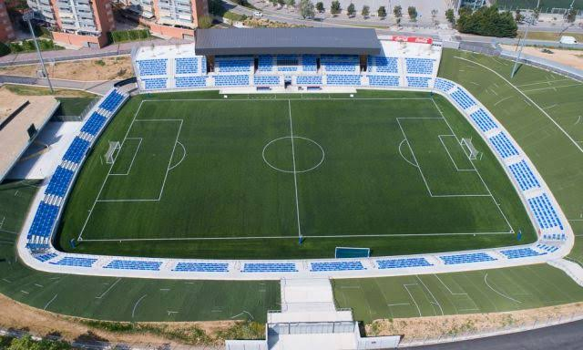

Husking Rovers FC
Victory is The Part of The Effort
Visitors to Badalona find a city rich with history and leisure. The golden beaches of the Mediterranean provide a scenic backdrop, while landmarks like the Pont del Petroli pier offer iconic views.
The Museum of Badalona preserves the Roman past of the city, and the Monastery of Sant Jeroni de la Murtra stands as a medieval jewel. Local festivals, fireworks, and open-air concerts make the city come alive year-round.
When combined with the passion for Husking Rovers, these attractions turn Badalona into a destination where football, culture, and lifestyle blend seamlessly.